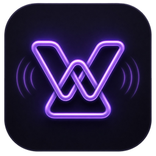
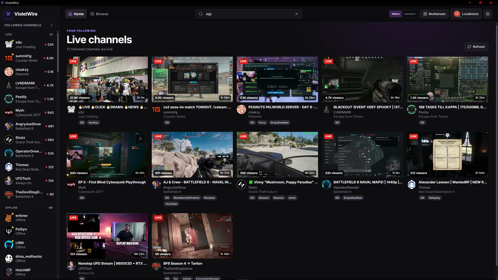

Close to live
Streams play about three seconds behind the broadcaster, level with or a little ahead of Twitch's own player, and stay there without stutter. Twitch's player is still one setting away.

A better way to watch Twitch and Kick on Windows.
Your followed channels from both services in one place, streams about three seconds behind live, up to four at once, and chat with the emotes you actually use. A real Windows app, not a website in a window.
Windows 10 and 11 · Free and open source · alpha

Built around how people actually watch: see who's live, open a stream fast, and keep chat readable.
Streams play about three seconds behind the broadcaster, level with or a little ahead of Twitch's own player, and stay there without stutter. Twitch's player is still one setting away.
Everyone you follow on both services in one sidebar, live first,
favorites on top. Browse and search either one, or type
twitch:name to jump straight to a channel.
Mix Twitch and Kick in one grid and pick which one you hear. Drag tiles to rearrange them, and save a line-up as a preset to open again in one click.
Read and send on both services with 7TV, FrankerFaceZ, BetterTTV, and native emotes in one searchable picker. Replies, profile cards, link previews, and a sound when you're mentioned.
Official sign-in, so your password never touches VioletWire, and tokens encrypted by Windows. There's no VioletWire server or account: the app talks to Twitch, Kick, and the emote services directly.
A dark Windows 11-style interface with a true-black OLED option, keyboard shortcuts throughout (press ? to see them), and updates that download themselves and ask before restarting.
Pick a view below, or select the image to see it full size.
A standard Windows installer with everything included. VioletWire is alpha software: it works, but expect the odd rough edge.
Windows 10 or 11, 64-bit. Nothing else to install.
VioletWire is free and always will be. Support goes toward development tools, code signing, hosting, and the other small costs of keeping the project going. Entirely optional.
One-off or monthly, handled entirely through GitHub with no extra account to make.
Sponsor on GitHubA one-time tip, if that's more your speed. No account needed to send one.
Buy a coffee